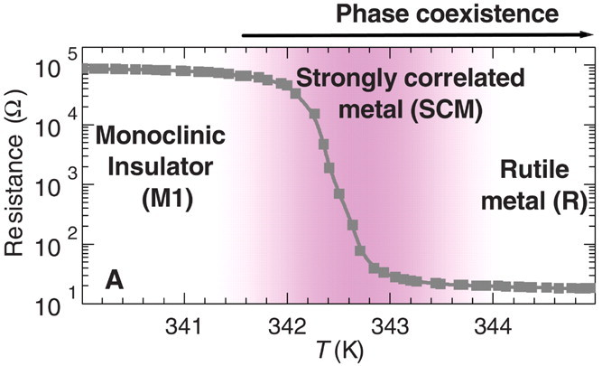
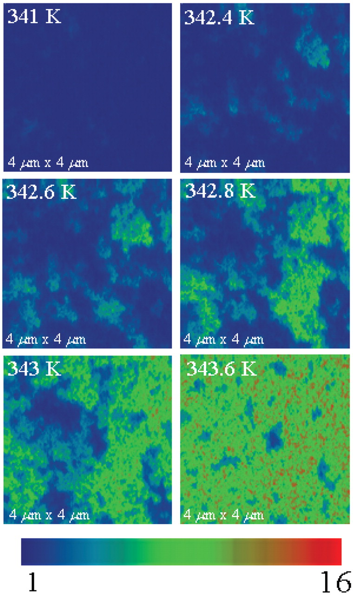

1 Laboratoire de Physique des Solides, CNRS-UMR8502, Université Paris-Sud, Orsay 91405, France
2 Department of Physics and National High Magnetic Field Laboratory, Florida State University, Tallahassee, FL 32306, USA
March 13, 2017 - New Orleans
The transition in VO2

Peierls vs Mott
Outline
Solve using DMFT a reference model: The Dimer Hubbard Model
Characterize the correlated Insulator to correlated Metal
transition
Dimer-Mott Transition explains key experiments in the transition of VO2
Dynamical Mean Field Theory (DMFT)
Same cluster impurity problem as other LDA+DMFT studies for VO2
Solved Exactly in the Bethe Lattice
DMFT Exact by construction in the large coordination limit
DMFT yields generic behavior of a high-dimensional lattice
DMFT Phase diagram at \(T=0\)
Reference Mott transition: V\(_2\)O3
The case \(t_\perp/D=0\) no dimers
The Dimer-Mott transition: VO2
The dimerized \(t_\perp/D=0.3\) lattice
The Effect of correlation is to enhance dimerization
Electronic Structure
Mid Infrared Peak appears in Correlated Metal
Optical conductivity at the transition

Metallic \(\sigma(w)\) is only from the metallic islands. The high
\(T\) rutile metal does not have a MIR peak
The Dimer Hubbard Model describes a temperature driven insulator to
metal correlated transition
These results explain key observations in the transition in VO2: the Mid-Infrared features in
the optical conductivity before the structural transition takes
place
The existence of a metastable correlated dimer metal phase is the
key ingredient that shows that the VO2 Insulator Metal transition
is electronically driven(Dimer Mott Mechanism)